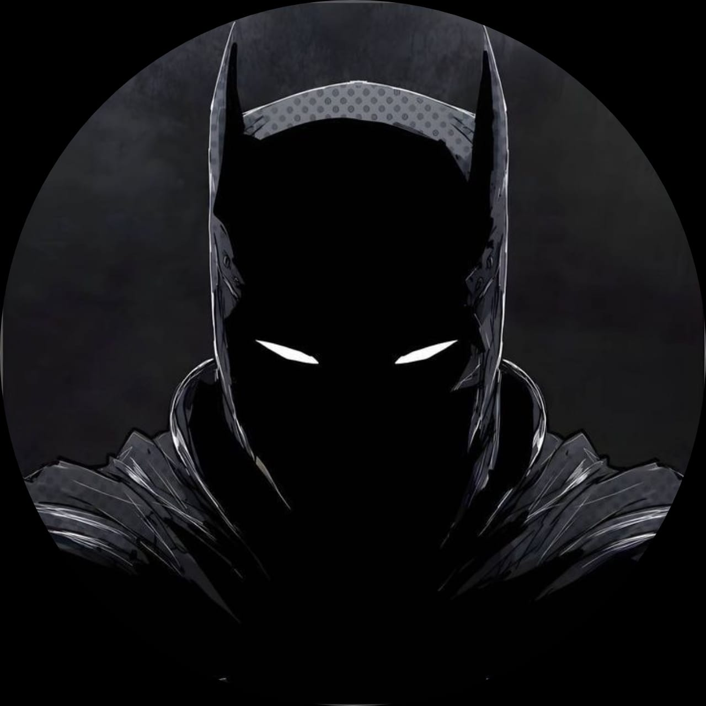

Aspiring Software Engineer
Yadav Krishna
A 19-year-old tech enthusiast from Kerala, India, passionate about software development, AI, UI/UX design, and creative digital experiences.
I enjoy learning by building projects, experimenting with new ideas, and constantly improving my technical and creative skills. I want to build impactful things with technology and grow with the future of tech.

About
Curious, ambitious, creative, and detail-oriented.
I may be quiet at first, but I express myself strongly through my projects, ideas, and designs. I appreciate modern aesthetics, cinematic visuals, clean interfaces, and meaningful user experiences.
Software Engineering
UI/UX Design
AI & Future Tech
Performance
& Optimization
& Optimization
Skills
Technologies and areas I am exploring
C Programming
C++
Java
Python
Firebase
UI/UX Design
Git & GitHub
Problem Solving
Frontend Development
AI
Future Technologies
Mindset
Build, experiment, improve, repeat.
Gaming and competitive mobile esports helped me develop quick decision-making, strategic thinking, and an interest in device optimization and performance tuning.
Journey
My academic and technical path
Featured Projects
Things I have built
Samadhanam
An emotion-based music recommendation platform that helps users
discover songs matching their current mood through a calming,
personalized, and responsive experience.
Padamm
A movie review and storage platform for saving films, organizing
watchlists, and sharing opinions in a simple modern cinematic
interface.
Prompt Kada
A curated prompt storage platform for organizing reusable AI
prompts across coding, content creation, design, and modern AI
workflows.
Personality
Quiet at first, expressive through work.
I value clean design, meaningful user experiences, consistency, and the patience to keep improving.
Build style
Simple ideas, polished experiences.
My projects usually focus on usefulness, clean visual design, interaction quality, and learning through real experiments.